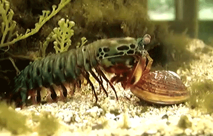

Fatos sobre o Stomatopoda.
O boxeador dos maresOdontodactylus scyllarus.
Camarão mantis, camarão louva-a-Deus, camarão boxeador, camarão pistola, camarão de estalo, lacraia-do-mar e tamarutaca são alguns dos nomes comuns para o crustáceo marinho (muito parecido com um camarão, mas não é um camarão!) pertencente à ordem Stomatopoda. Medindo cerca de 18 cm e habitando águas claras e rasas dos recifes, esse animal de colorido intenso é bastante apreciado no Aquarismo.
| Reino | Filo | Subfilo | Classe | Subclasse | Ordem |
|---|---|---|---|---|---|
| Agora você já sabe um pouco mais sobre o animal!!! | Animalia | Arthropoda | Crustacea | Malacostraca | Hoplocarida | Stomatopoda |
Melhor visão em cores do mundo
Como se não bastasse, estes crustáceos apresentam a melhor visão em cores do mundo. Possuindo 08 fotorreceptores para distinção de cores (humanos possuem 03), conseguem detectar ondas ultravioleta e milhares de gradações (até 16 cores primárias). Com um mecanismo de polarização visual complexo e visão em 360 graus, são capazes de determinar profundidade e localização de objetos em três ângulos. Este fenômeno inspira pesquisadores para o desenvolvimento e aprimoramento de recursos fotográficos e audiovisuais como os DVDs.

Força descomunal!!
Excelente golpeador, o camarão boxeador (Stomatopoda) "soca" suas presas com suas garras com uma força de até 2,5 mil vezes seu peso em menos de 800 microsegundos. Este nocaute equivale a um tiro de pistola calibre 22. Uma força de impacto de 60 kg/cm².Essa força esmagadora é a responsável pelo seu título de "lagosta-boxeadora" e é capaz de facilmente quebrar a carapaça de um caranguejo, as conchas duras e calcificadas de gastrópodes ou até mesmo quebrar o vidro reforçado de um aquário.
